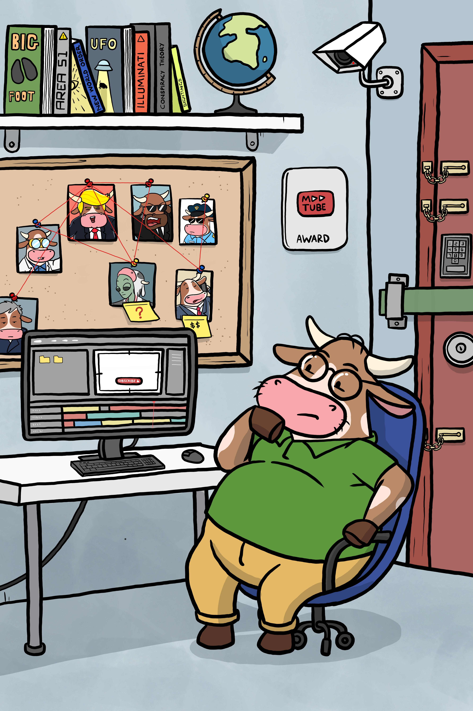

In traditional banking, if you forget your password, you click 'Forgot Password' or visit your local branch with a photo ID. On a decentralized blockchain, there is no corporate customer service hotline. You are the sole custodian of your wealth.
Dad (Fe) wears green polos, inspects the family hardware vault twice before bed, and treats security like a structural iron beam. Iron doesn't bend, and your security habits shouldn't either.
When your crypto sits on a centralized exchange, you do not hold coins—you hold an IOU. If that exchange freezes withdrawals or mismanages reserves, you become an unsecured creditor standing in line.
A non-custodial wallet stores cryptographic private keys directly on your physical hardware or secure device. You hold the actual asset, meaning no third party can freeze, confiscate, or re-lend your balance.
A seed phrase is not a routine web password. It is the cryptographic master root to every address in your wallet.
• Never type your seed phrase on a keyboard connected to the internet. • Never screenshot your seed phrase on a phone. • Never upload your seed phrase to cloud storage, notes apps, or email drafts. • Write it down on physical paper or stamp it into stainless steel, and lock it in a fireproof location.
Blockchain transactions are irreversible. Once funds leave your address, no bank manager can reverse the charge. Scammers exploit urgency, impersonate official support accounts, and set up fake dApp clones.
Dad's rule: Double-check every transaction prompt on your hardware screen, verify contract URLs, and treat any unsolicited message offering 'wallet verification' as a direct attack.
💡 Herd Glossary: Seed Phrase
A master recovery sequence of 12 to 24 words that generates your private keys on any device. Guard it like physical cash; anyone with these words controls your assets.
The pasture is open. Learn crypto without the headache.
Herd up free.